Grand Canyon Colorado
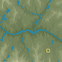
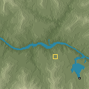
36.1000, -112.1000 · 1 designs · requested area passed
Ten fixed places, requested at 128². Blue: simulated water. Gold: start. White: river origins in the after views. Settings below each preview disclose scale/size changes.
AWS Terrain Tiles / Mapzen and providers · Modified elevation · Full attribution. Local prototype checks; no in-game play test.


36.1000, -112.1000 · 1 designs · requested area passed
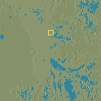
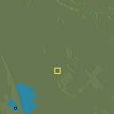
29.1700, -89.2500 · 3 designs · auto-try used
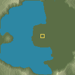
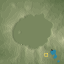
42.9400, -122.1100 · 6 designs · auto-try used
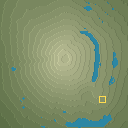

35.3600, 138.7300 · 9 designs · auto-try used
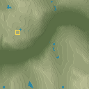
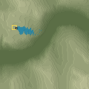
62.1000, 7.1000 · 1 designs · requested area passed
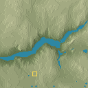
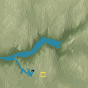
37.7400, -119.5900 · 1 designs · requested area passed
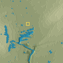
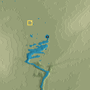
-17.9300, 25.8600 · 1 designs · requested area passed
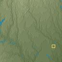
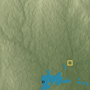
38.5000, -98.5000 · 6 designs · auto-try used
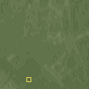
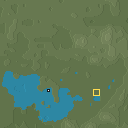
52.5000, 5.5000 · 4 designs · auto-try used
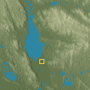
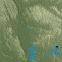
24.5000, 9.5000 · 2 designs · requested area passed